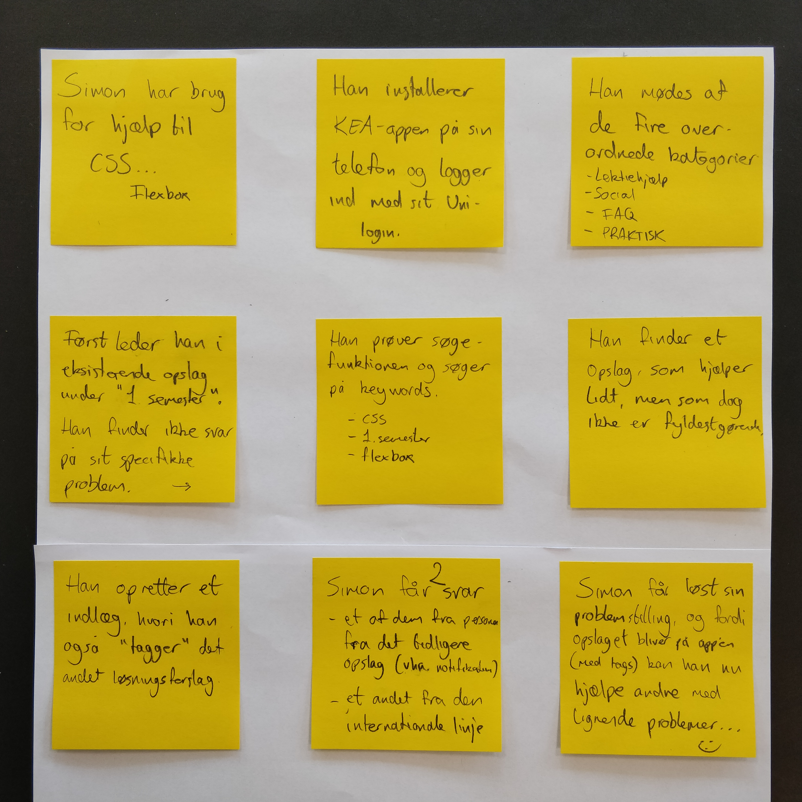
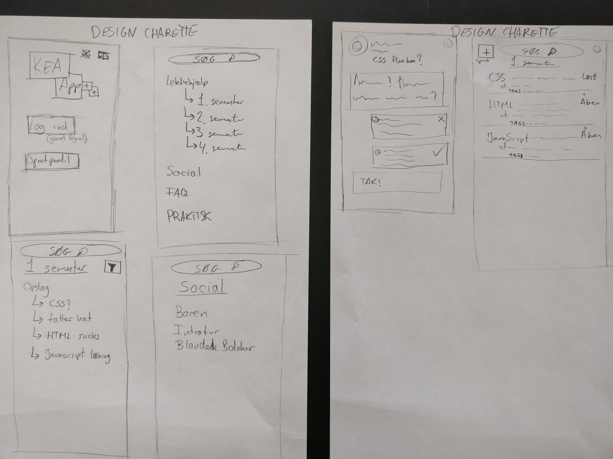
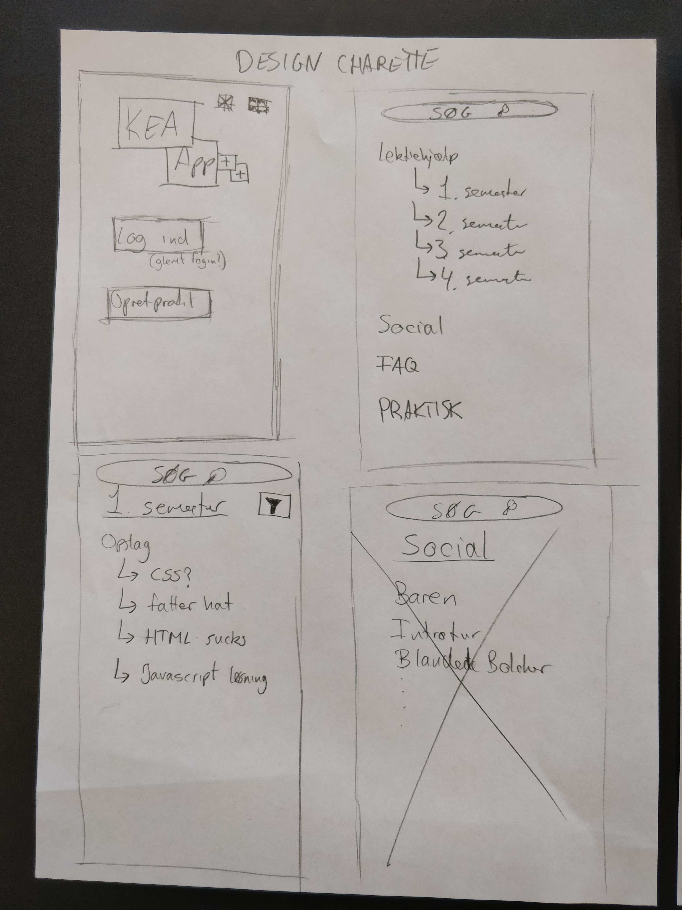
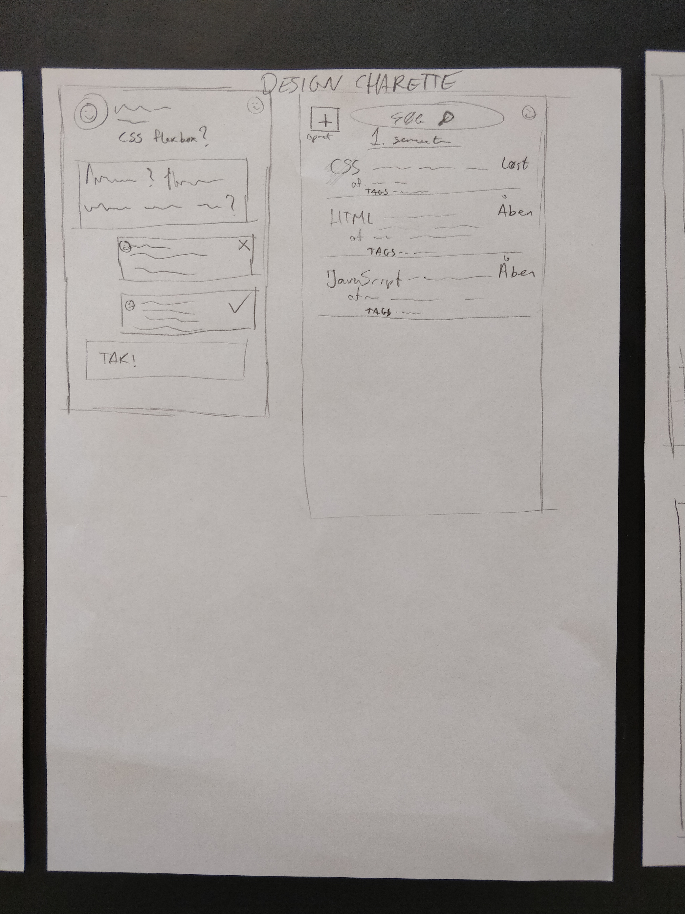
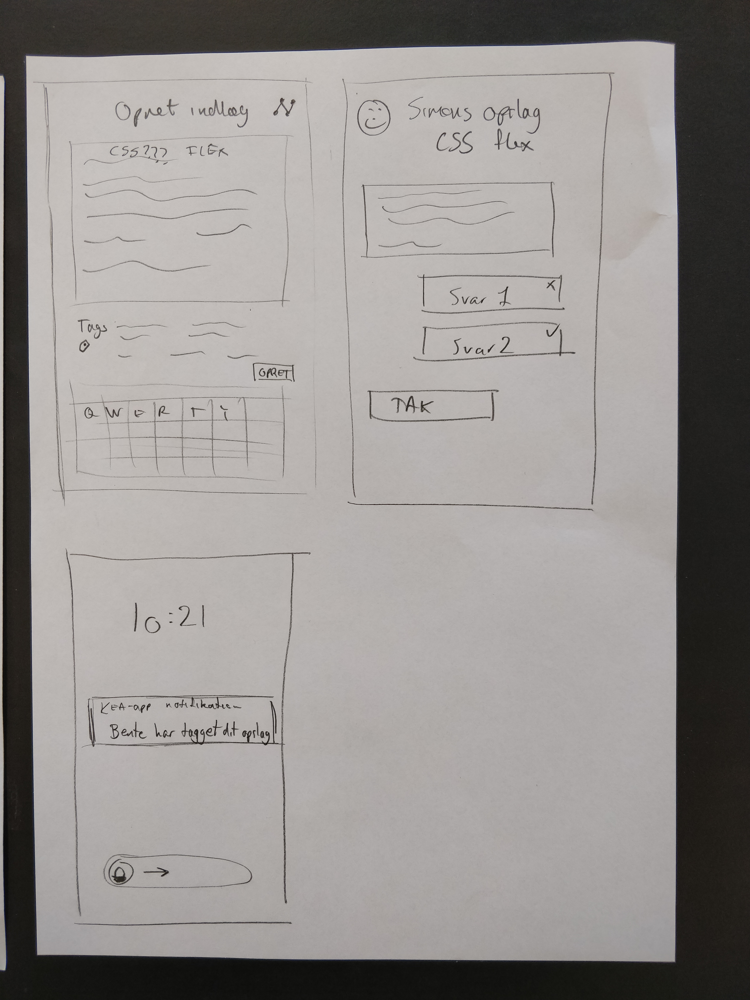
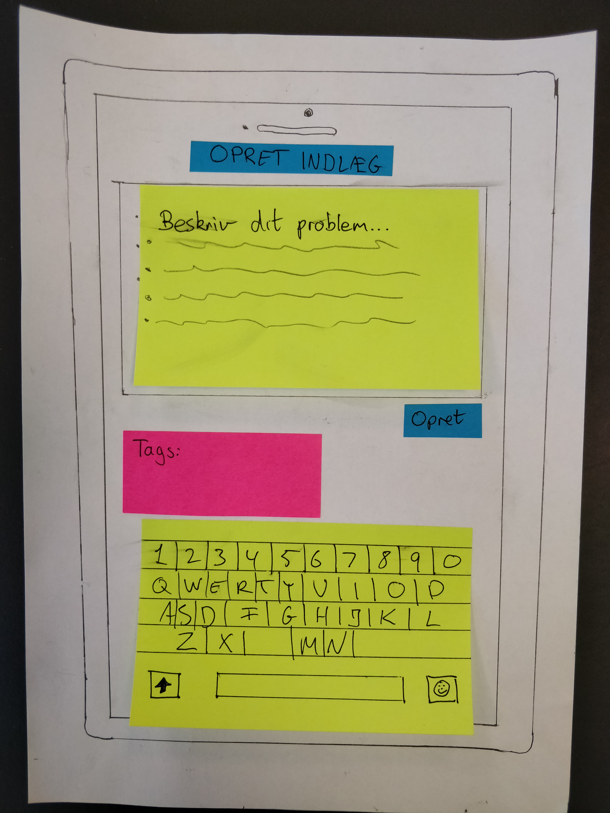
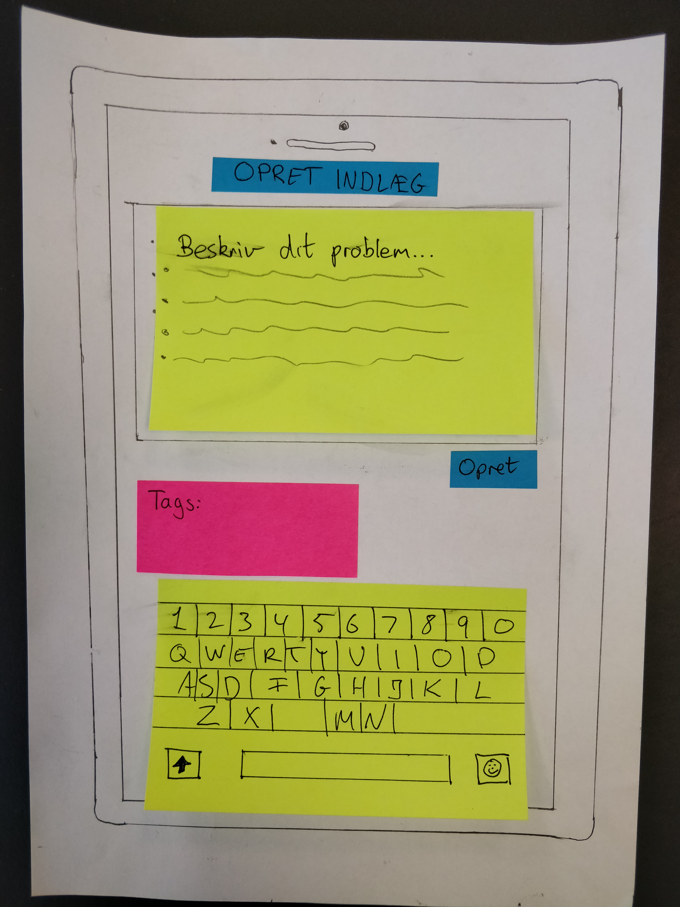

Link til GitHub-repository
GitHubBrugerresearch
Dokumentation af empiri
Data-mining
Hvad bruger du din smartphone til?
Hvad mangler du på KEA?
Hvad glæder du dig mest til i din gang på KEA?
Hvilke erfaringer har du med at arbejde eller studere i udlandet?
Hvor møder du de internationale studerende på KEA?
Hvilke fordele kan du se ved at arbejde mere sammen med international linje på MMD?
Hvordan kan vi arbejde på tværs af linjer på MMD?
Experience map
Problemstilling
“Multimediedesignstuderende på den danske og den internationale linje har ikke meget med hinanden at gøre, det vil KEA gerne gøre noget ved. Men hvordan kan en KEA app understøtte dette? KEA app’en må også gerne forbedre de studerendes muligheder for at få et arbejde efter endt uddannelse.”
Problemformulering
Der er brug for et forum, hvor danske og internationale linjer kan mødes og hjælpe hinanden, og samtidig skabe relationer på kryds og tværs, så der bliver skabt et bedre studiemiljø!
Persona

Storyboard
Storyboard Øvelse

Storyboard Opgave
Dokumentation af Design Charette
   Features og funktionaliteter
AOF
- Login-funktion med uni-login
- En liste med katogorier som der kan trykkes på
- Søgefunktion
- Interaktion med studiekollegaer via forskellige opslag
- tags til de forskellige emner
Prototype
De to prototyper, der er lavet skal vise startsiden, hvor man enten logger ind med sit uni-login eller at man "signer up"
 

Prototype XD
Test af prototype
mine test af min prototype blev lavet af to elever fra den nationale linje(desværre) så fik ingen fra den internationale til at teste den, Men de kom med god respsons, min app var meget ens i farverne og der var ikke den store kontrast. Der var nogle knapper der manglede til at komme nemt frem og tilbage. Jeg manglede også nogle sider som fx det at man kunne oprette et opslag, en sign-up side og et billede som baggrund.
Præsentation af XD-prototype
Jeg har lavet en app, der skal gøre det nemt at forbinde de nationale og internationale elever hvis der er nogen der har problemer, med Fx CSS, så kan man lave et opslag og beksrive sit problem og så forhåbentlig får en løsning på sit problem. Andre funktioner i app'en er en forbindelse mellem det sociale som er hvad der sker til fredagsbar og knap til den fælles facebookside. samt en funktion hvor man kan se hvad der er i Kantinen og som ville opdatere hver uge. Til sidst er der også lavet en kalender hvor den pågældende studenrende kan set sit skema.